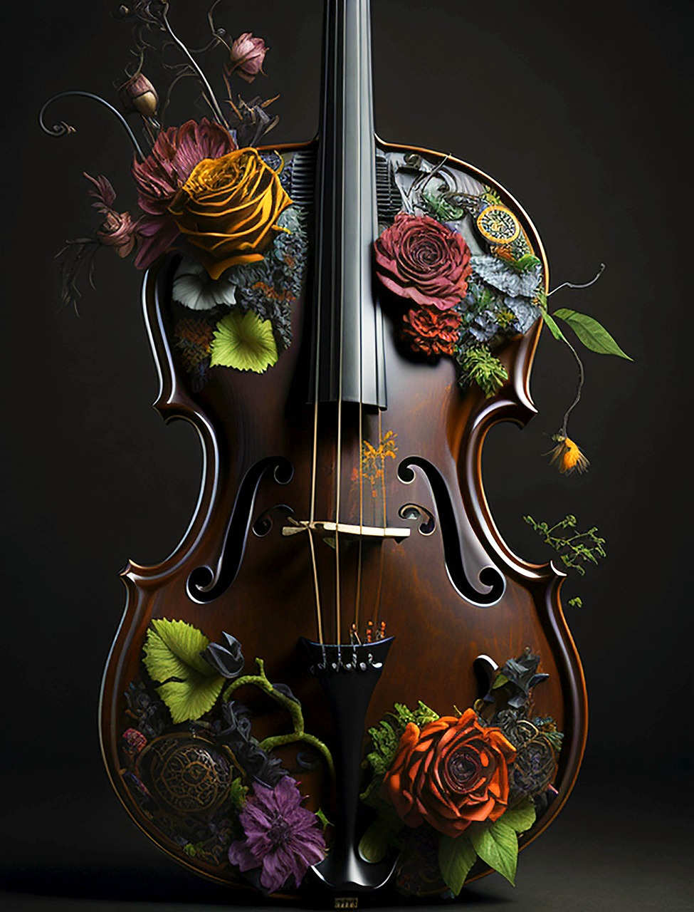
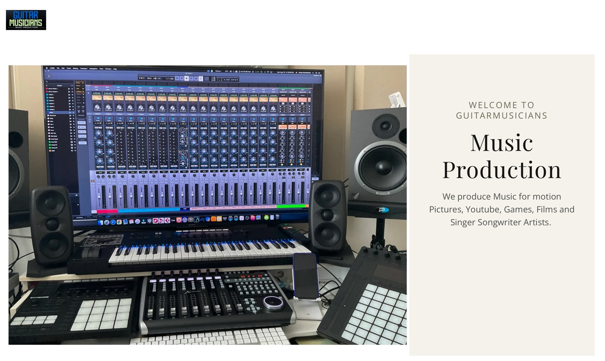
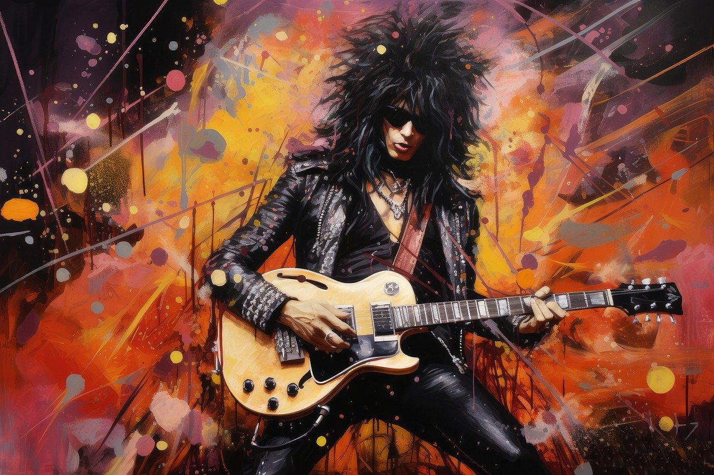

Music is Our Passion
We shape beats, tempos, rhythms and melodies into music made for your project.

Our Services
Music production is what we know, do, and love. There is always something new that can be discovered by mixing beats, tempos, rhythms, and melodies. We are committed to creativity and bringing music to new heights in the industry.

We shape beats, tempos, rhythms and melodies into music made for your project.

As experienced musicians and composers, we create your distinct sound and help establish a professional image.
Original licensed music for YouTube, games, documentaries, short films and visual storytelling.
About Us
We custom make music for streaming, motion pictures, YouTube, games, short films, advertising and singer-songwriter artists.
Find Out MoreFeatured Release
In the Studio